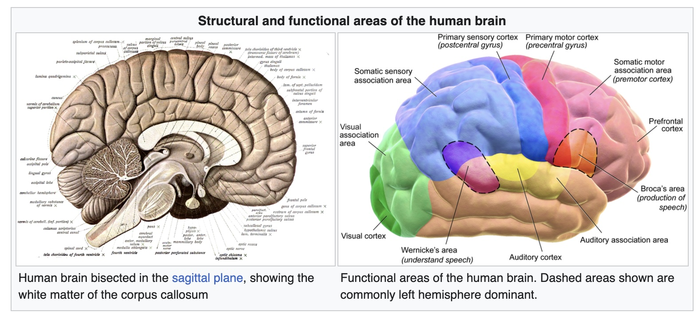
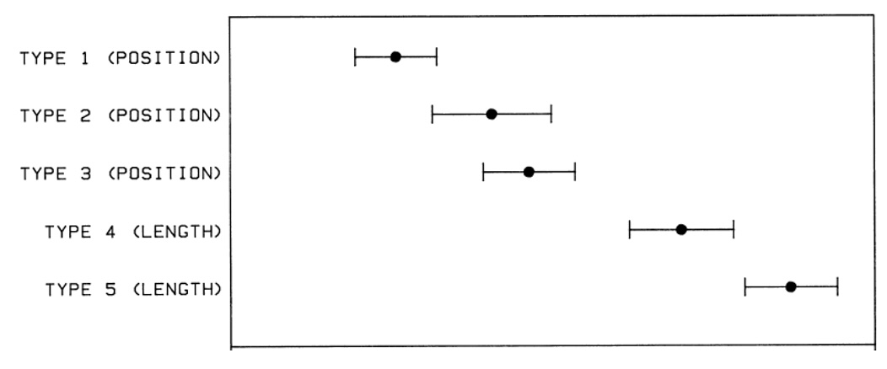

Expressiveness: A set of facts is expressible in a visual language if the sentences in the language express all the facts in the set of data, and only the facts in the data
Effectiveness: A visualization is more effective than another visualization if the information conveyed by one visualization is more readily perceived than the information in the other visualization
Design Principles Translated
Expressiveness: Tell the truth and nothing but the truth (don’t lie, and don’t lie by omission)
Effectiveness: Use encodings that people decode better (where better == faster and/or more accurate)
Effectiveness measures
Accuracy: Estimating magnitudes
Discriminability: number of values one can distinguish
Saliency: attracting attention
Separability: interference between channels
Grouping: pattern formation
Perception for Design
The Brain and Vision
“Visual thinking consists of a series of acts of attention, driving eye movements, and tuning our pattern finding circuits” - Colin Ware

The Visual Brain
The Act of Perception
Bottom-Up and Top-Down Processes
Bottom-up Processing
Information is successively selected and filtered into patterns as it passes through stages:
Optical nerve to V1 Cortex
Use texture and colors to aggregate patterns
Visual objects recognized in visual working memory
Top-Down Processing
Every stage of bottom-up processing has a corresponding top-down process
Ware describes this as “attention”
We only get the information we need, when we need it
Implications for Design
“Just-in-time visual queries” (Ware)
“The brain operates as a set of nested loops. Outer loops deal with generality while inner loops process detail.” (Ware)
Low-Level Feature Analysis
David Hubel and Torsten Wiesel won Nobel Prize for this discovery
Visual cortex contains specialized cells for detecting edges, orientations, and motion
What and Where Pathways
What pathway: Object identification
Where pathway: Object location and eye movement
Accuracy
Fechner’s experiment (1869)
Power Law
Graphical Perception
Cleveland & McGill Experiment
Task: Judge the percentage that the smaller value is of the larger
Cleveland & McGill Results

Position > Length and Angle > Area
Other Cleveland and McGill Experiment
Other Cleveland and McGill Experiment
Channel Effectiveness Ranking
Accuracy Guidelines
Prioritize high-rank channels (with reason)
Do not expect precise judgments from low-rank channels
Position > Length > Angle > Area > Volume > Color
Application: - Use position for most important comparisons - Use color for categorical distinctions - Avoid 3D for quantitative data
Relative vs. Absolute Judgments
Humans are better at relative comparisons than absolute judgments
Discriminability
Discriminability: How many values can be distinguished within a channel
It depends on:
Channel properties
Spatial arrangement
Size
Cardinality
Discriminability
Discriminability: How many values can be distinguished within a channel
It depends on:
Channel properties
Spatial arrangement
Size
Cardinality
Discriminability
How many distinct values can be distinguished within a channel?